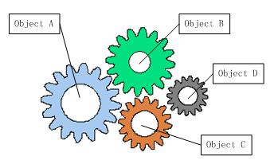
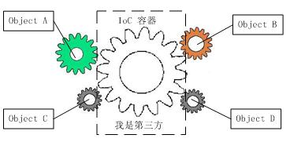

Spring
介绍
版本
- SNAPSHOT：快照版（测试版）
- RELEASE：稳定版
- GA：正式版
- M：里程碑版
- RC：终测版
特点
给我们的开发带来了什么好处?
entity/model/pojo –> 表
dao/mapper –> DB操作
service –> 业务逻辑层，AOP切入
controller –> Servlet
utile –> 工具类
海纳百川
- spring-jdbc：Spring可以与数据库建立关系，JPA
Spring模块
- spring-context：IOC容器
- spring_core：IOC与DI的实现
- spring-beans：Bean工程
- spring-aop：AOP
- spring-jdbc：对JDBC的封装
- spring-tx：JDBC事务控制处理
- spring-web：对web基础支持
- spring-webmvc：实现SpringMVC
IOC：控制反转，是一种思想
DI：依赖注入，是思想的实现方式
带来最大的好处就是解耦，以前需要自己new，每个类、模块之间都有密切的关系，一旦某个模块发生问题，整个系统瘫痪，耦合度太高（关系密切）
想解耦，就要降低他们之间的关系，全部交给容器来控制（IOC）


IOC
spring-config.xml
基础数据类型注入
1
2
3
4
5
6
7
8
9
10
11
12
13
14
15
16
17
18
19
20
21
22
23
24
25
26
27
28
29
30
31
32
33
34
35
36
37
38
39
40
41
42
| <?xml version="1.0" encoding="UTF-8"?>
<beans xmlns="http://www.springframework.org/schema/beans"
xmlns:xsi="http://www.w3.org/2001/XMLSchema-instance"
xmlns:p="http://www.springframework.org/schema/p"
xmlns:c="http://www.springframework.org/schema/c"
xsi:schemaLocation="http://www.springframework.org/schema/beans
http://www.springframework.org/schema/beans/spring-beans.xsd">
<bean id="user" class="com.wxh.entity.User" p:password="Administrator">
<property name="username" value="user"/>
</bean>
<bean id="user1" class="com.wxh.entity.User">
<constructor-arg name="username" value="user1"/>
<constructor-arg name="password" value="Administrator"/>
</bean>
<bean id="user2" class="com.wxh.entity.User">
<constructor-arg value="user2"/>
<constructor-arg value="Administrator"/>
</bean>
<bean id="user3" class="com.wxh.entity.User">
<constructor-arg name="password" value="Administrator"/>
<constructor-arg name="username" value="user3" index="0"/>
</bean>
<bean id="user4" class="com.wxh.entity.User" c:username="user4" c:password="Administrator"/>
</beans>
|
测试代码：
1
2
3
4
5
6
7
8
9
10
| @Test
public void test() {
ApplicationContext applicationContext = new ClassPathXmlApplicationContext("classpath:spring-config.xml");
System.out.println(applicationContext.getBean("user"));
System.out.println(applicationContext.getBean("user1"));
System.out.println(applicationContext.getBean("user2"));
System.out.println(applicationContext.getBean("user3"));
System.out.println(applicationContext.getBean("user4"));
}
|
引用数据类型注入
1
2
3
4
5
6
7
8
9
10
11
12
13
14
15
16
17
18
19
20
21
22
23
24
25
26
27
28
29
30
31
32
33
34
35
36
37
38
39
| <?xml version="1.0" encoding="UTF-8"?>
<beans xmlns="http://www.springframework.org/schema/beans"
xmlns:xsi="http://www.w3.org/2001/XMLSchema-instance"
xmlns:p="http://www.springframework.org/schema/p"
xsi:schemaLocation="http://www.springframework.org/schema/beans
http://www.springframework.org/schema/beans/spring-beans.xsd">
<bean id="test" class="com.wxh.entity.Test">
<property name="list">
<list>
<value>1</value>
<value>2</value>
<value>3</value>
</list>
</property>
<property name="set">
<set>
<value>1</value>
<value>2</value>
<value>3</value>
</set>
</property>
<property name="map">
<map>
<entry key="张三" value="zhangsan"/>
<entry key="李四" value="lsii"/>
</map>
</property>
<property name="userList">
<list>
<bean id="user1" class="com.wxh.entity.User" p:username="普通用户" p:password="nimda"/>
<ref bean="user2"/>
</list>
</property>
</bean>
<bean id="user2" class="com.wxh.entity.User" p:username="管理员" p:password="NIMDA"/>
</beans>
|
测试代码：
1
2
3
4
5
| @Test
public void test() {
ApplicationContext applicationContext = new ClassPathXmlApplicationContext("classpath:spring-test.xml");
System.out.println(applicationContext.getBean("test"));
}
|
当ApplicationContext实例化后，会将配置文件中所有的Bean注入到容器中（此时已经拥有所有Bean的对象）
想让Spring帮忙创建类，类中必须要包含无参构造方法
当加载配置文件时，配置中的所有Bean就会进入容器，此刻容器中就有了Bean对应类的对象名
是否立即加载bean
1
2
3
4
5
|
<bean id="user" class="com.wxh.entity.User" abstract="true"/>
<bean id="user1" class="com.wxh.entity.User1" parent=“user"/>
|
Spring默认单例
1
2
3
4
5
|
<bean id="user" class="com.wxh.entity.User" abstract="true"/>
<bean id="user1" class="com.wxh.entity.User1" parent=“user" scope="prototype"/>
|
注解
1
2
3
4
5
6
7
|
@Repository 仓库（Dao层），加上该注解可以让Spring控制
@Controller 控制器
@Service 业务层
@Component 普通组件
@Autowired
|
AOP
AOP使用场景：
日志、事务、权限认证、安全检查
AOP配置：
- 通知
- 环绕通知：在目标方法执行前后实施管理，通常用于日志、事务处理
- 前置通知：在目标方法执行前，通常用于权限认证
- 后置返回通知：在目标方法成功执行后，通常用于关闭流、删除临时文件等
- 后置最终通知：在目标方法成功执行后，无论是否有异常，一定返回（finally），通常用于释放资源
- 异常通知：方法抛出异常，通常用于异常处理
- 引入通知：在目标类中新增一些属性和方法，通常用于修改目标类
Spring—Mybatis